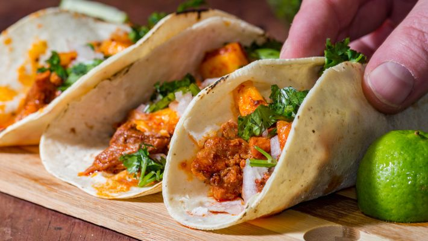

TACOS MEXICANOS

- Tortilhas para o taco
- 1 e 1/2 xícara (chá) de água morna
- 2 xícaras (chá) de farinha de trigo
- 1 tigela com água para umedecer a mão para trabalhar a massa
- sal a gosto
- Guacamole
- 2 tomates médios sem sementes
- 1 pimenta dedo-de-moça média
- folhas de 1/2 maço médio de coentro
- 1 abacate médio
- 1 cebola média picada
- suco de 1 limão médio
- 3 colheres (sopa) de azeite de oliva
- sal a gosto
- Chilli
- 600 g de carne de porco cozida
- 250 g de coxão mole ou alcatra cozida
- 1 colher de chá de óleo
- 2 cebolas médias fatiadas
- 3 fatias médias de bacon em pedaços pequenos
- 2 tomates médio, sem pele e sem sementes, picados
- 1 colher (sopa) de chilli em pó
- 1 xícara (chá) de feijão em conserva
- 6 folhas de alface picadas finamente
- 4 colheres (sopa) de creme de leite
- suco de limão
 |
Modo de Preparo
|
- Tortilha para taco 8 porções
- Coloque a farinha de trigo em uma tigela grande e junte a água morna e misture com as mãos até que forme uma
bola.
- Cubra com um pano
- Deixe na tigela de 5 a 10 minutos.
- Depois faça umas bolinhas do tamanho de uma noz.
- Forre uma forma de tortilha com plástico e por outro plástico.
- Prense a massa.
- Depois de prensada abra e retire com o auxílio do plástico.
- Coloque cada tortilha em uma frigideira de ferro já aquecida 20 segundos para cada lado.
- Guacamole
- Pique os tomates em cubos pequenos.
- Abra a pimenta ao meio, elimine as sementes com os filamentos brancos e pique-as em pedaços bem pequenos.
- Pique finamente as folhas de coentro e reserve.
- Descasque o abacate, retire o caroço e coloque a polpa num prato fundo.
- Amasse com um garfo, deixando alguns pedaços e reque com o suco e limão.
- Adicione o tomate, a pimenta, o coentro, a cebola, o azeite de oliva e o sal e misture.
- Chilli
- Usando dois garfos desfie as carnes e reserve.
- Aqueça o óleo em uma panela e refogue a cebola e o bacon.
- Junte a carne, os tomates e 4 colheres de sopa de água.
- Incorpore o chilli e cozinhe em fogo baixo, mexendo de vez em quando, até a carne dourar e não restar
líquido.
- Retire e reserve.
- Coloque o feijão em outra panela e cozinhe, mexendo com vigor até obter uma pasta, reserve.
- Misture o creme de leite com um pouco de suco de limão.